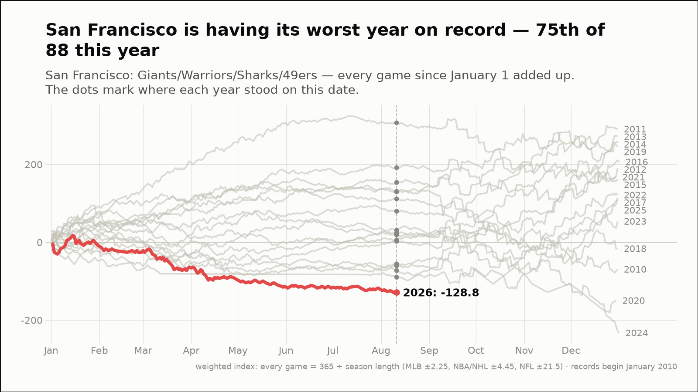
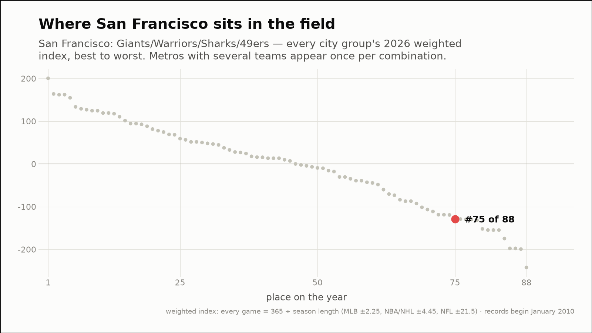
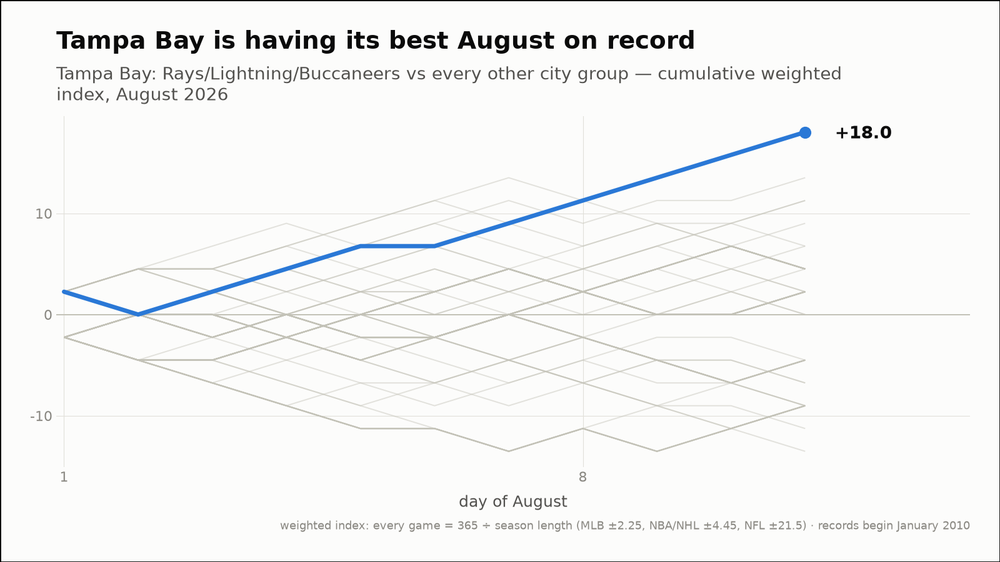
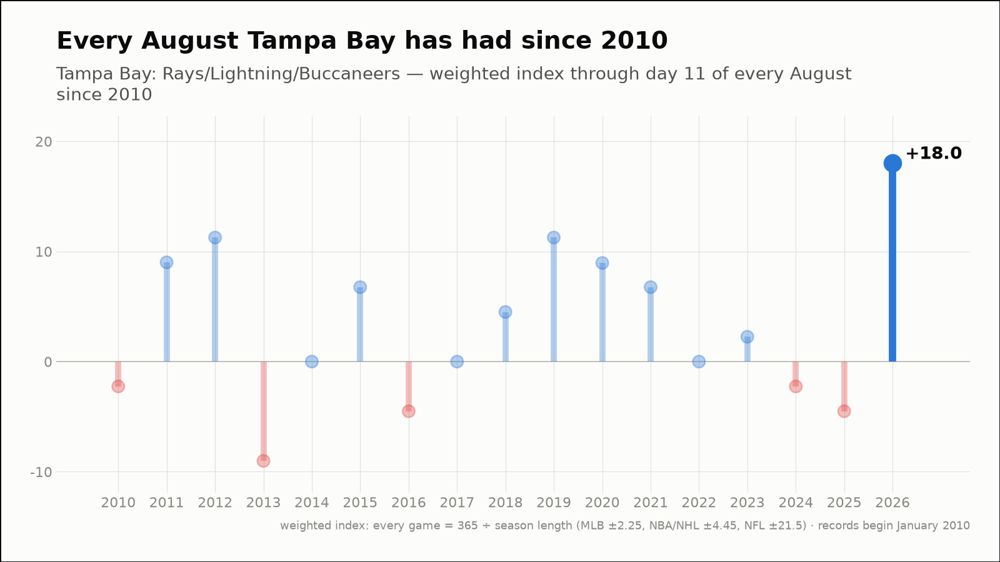
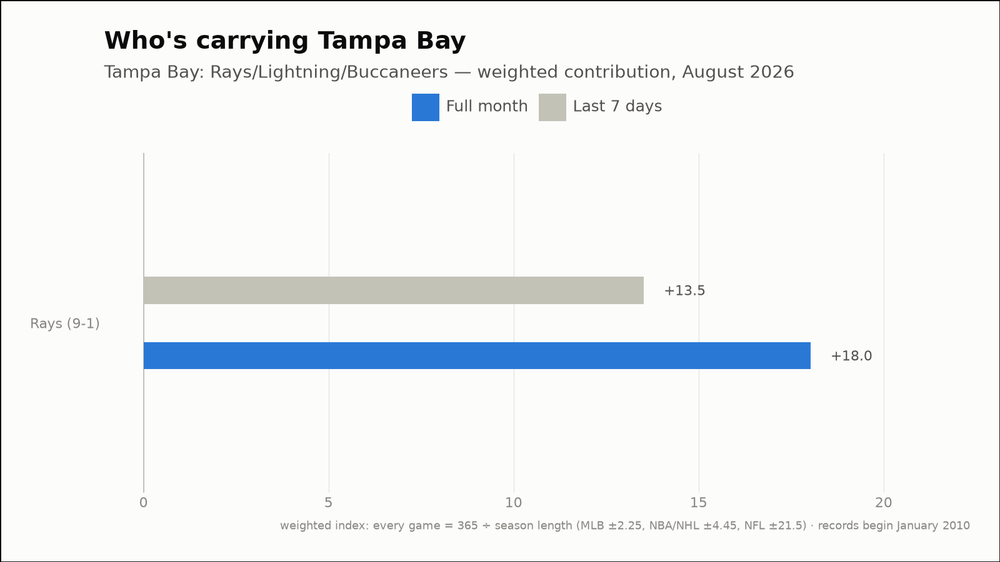
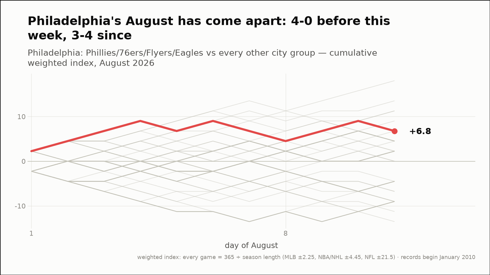
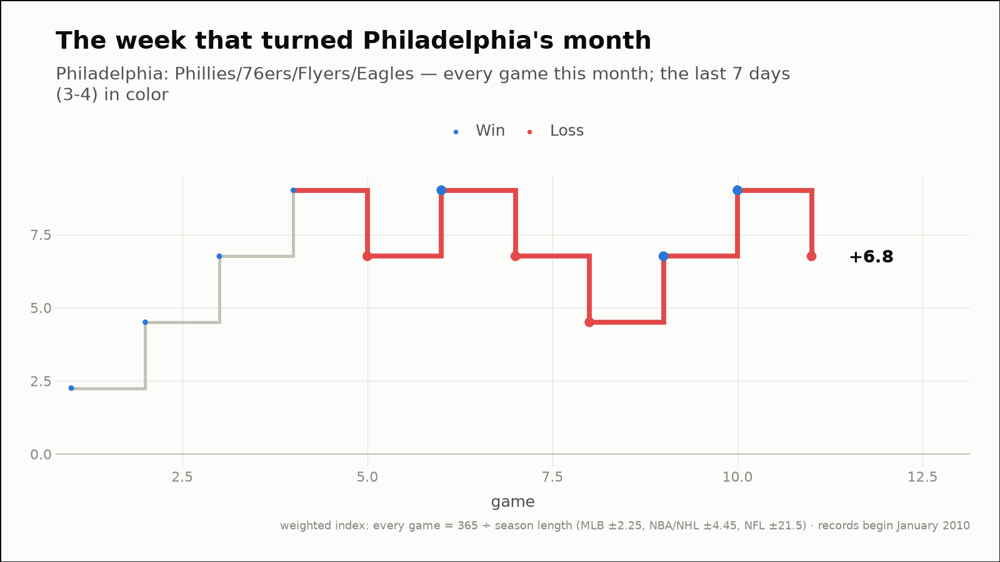
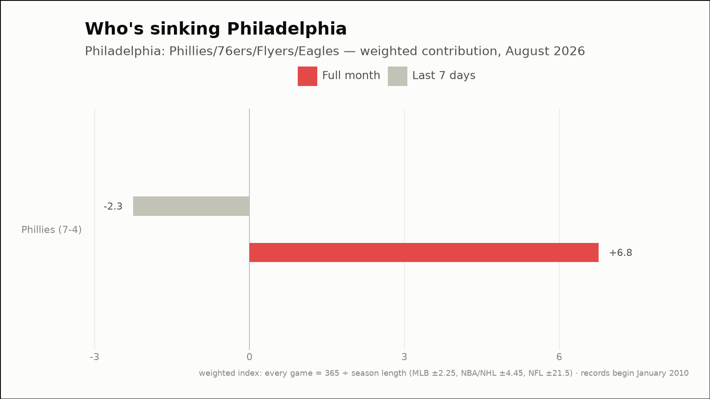

Out of the norm — three fandoms off their own script
The weekly hunt across all 88 city groups, through August 11, 2026
San Francisco is having its worst year on record — 75th of 88 this year
San Francisco: Giants/Warriors/Sharks/49ers
- 2026 so far (through August 11)
- 90-125, -128.8 weighted — the worst of the 17 years on record, at the same point
- Against the field
- 75th of 88 city groups on the year (15th percentile)
- This month (through August 11)
- 3-7, -9.0 weighted
- Last 7 days
- 2-4, -4.5 weighted
- Driving it this week
- Giants (2-4, -4.5)


Tampa Bay is having its best August on record
Tampa Bay: Rays/Lightning/Buccaneers
- This month (through August 11)
- 9-1, +18.0 weighted — the best August of the 17 on record
- vs all months
- tied for the 27th-best of 188 months on record (86th percentile)
- Last 7 days
- 6-0, +13.5 weighted
- Driving it this week
- Rays (6-0, +13.5)
- Active streaks
- Rays W8



Philadelphia's August has come apart: 4-0 before this week, 3-4 since
Philadelphia: Phillies/76ers/Flyers/Eagles
- Before this week
- 4-0, +9.0 weighted (+2.25 per game)
- Since
- 3-4, -2.3 weighted (-0.32 per game)
- This month (through August 11)
- 7-4, +6.8 weighted
- Last 7 days
- 3-4, -2.3 weighted
- Driving it this week
- Phillies (3-4, -2.3)


